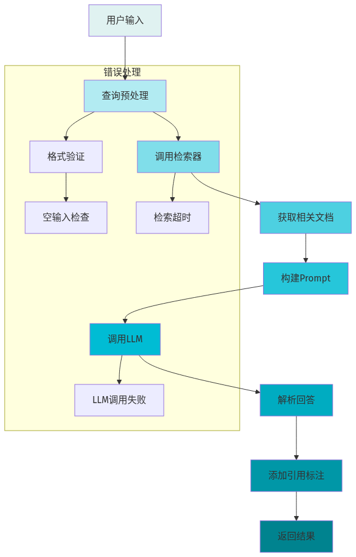
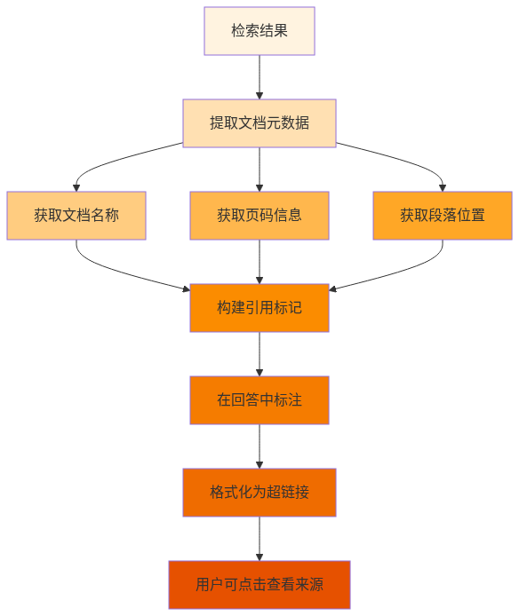

本地大模型知识库系列第08篇 | 接口开发
上一篇我们学习了RAG的核心原理，现在我们要把这个能力封装成一个可调用的接口，方便其他应用使用。

01 封装问答函数
import json
import time
from langchain.chains import RetrievalQA
from langchain.llms import Ollama
from langchain.vectorstores import Chroma
from langchain.embeddings import HuggingFaceEmbeddings
class KnowledgeBaseQA:
def __init__(self, model_name="llama3:8b", db_path="./chroma_db"):
self.embeddings = HuggingFaceEmbeddings(model_name="all-MiniLM-L6-v2")
self.vector_store = Chroma.persist_directory(
persist_directory=db_path,
embedding_function=self.embeddings
)
self.llm = Ollama(model=model_name)
self.retriever = self.vector_store.as_retriever(
search_kwargs={"k": 3}
)
self.qa_chain = RetrievalQA.from_chain_type(
llm=self.llm,
chain_type="stuff",
retriever=self.retriever,
return_source_documents=True
)
def answer(self, query, top_k=3):
start_time = time.time()
try:
result = self.qa_chain({"query": query})
sources = []
for doc in result["source_documents"]:
sources.append({
"source": doc.metadata.get("source"),
"page": doc.metadata.get("page", 0),
"score": doc.metadata.get("score", "N/A")
})
response_time = time.time() - start_time
return {
"success": True,
"answer": result["result"],
"sources": sources,
"response_time": round(response_time, 2),
"model": self.llm.model
}
except Exception as e:
return {
"success": False,
"error": str(e),
"answer": "",
"sources": []
}02 添加引用标注
让用户知道答案来自哪份文档，增加回答的可信度：

def add_citations(answer, sources):
citation_text = "\n\n## 引用来源\n"
for i, source in enumerate(sources, 1):
source_name = source.get("source", "未知来源")
page = source.get("page", "")
citation_text += f"{i}. [{source_name}]"
if page:
citation_text += f"(第{page}页)"
citation_text += "\n"
return answer + citation_text03 测试问答接口
# 初始化问答助手
qa = KnowledgeBaseQA()
# 测试问题
query = "请解释什么是RAG？"
result = qa.answer(query)
# 输出结果
if result["success"]:
print("回答:")
print(result["answer"])
print("\n引用来源:")
for src in result["sources"]:
print(f"- {src['source']}")
print(f"\n响应时间: {result['response_time']}秒")
else:
print(f"错误: {result['error']}")⚠️ 常见问题
1. 文档元数据缺失：确保加载文档时保留metadata信息
2. 引用标注格式混乱：统一引用格式模板
3. 响应时间过长：添加进度回调或异步处理
4. 错误信息不友好：统一错误格式和提示
—— 未完待续 ——
本地大模型知识库系列第08篇
下一篇：Web界面——让知识库"好用"起来